1) Intro scene: Unknown Woman and Joe are walking in darkness.
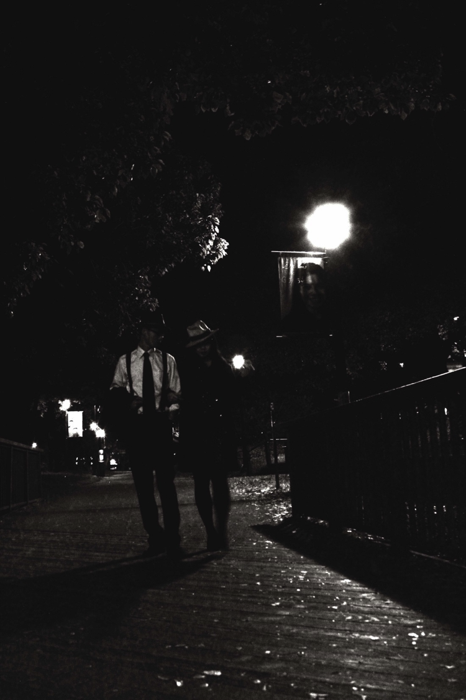
- The background is very dark while there are just small sources of the light. The first source is moon, and the other one is a single light in the street.
- Their shadows are reflected on the ground.
-The outdoor scenes in film noir are typically set at night. This basically connotes a nocturnal and claustrophobic world.
-Walking in darkness, on the other hand, is mysterious because we don't know what might be lurking outside or shrouded in darkness.
- The shot displays their romance as well. The Woman holds Joe's arm while they are walking, and that could be one of her charms.
-This shot also depicts the urban setting as well (we take the photographs in Berkeley.)
2) Intro scene: Joe suddenly kills Unknown Woman
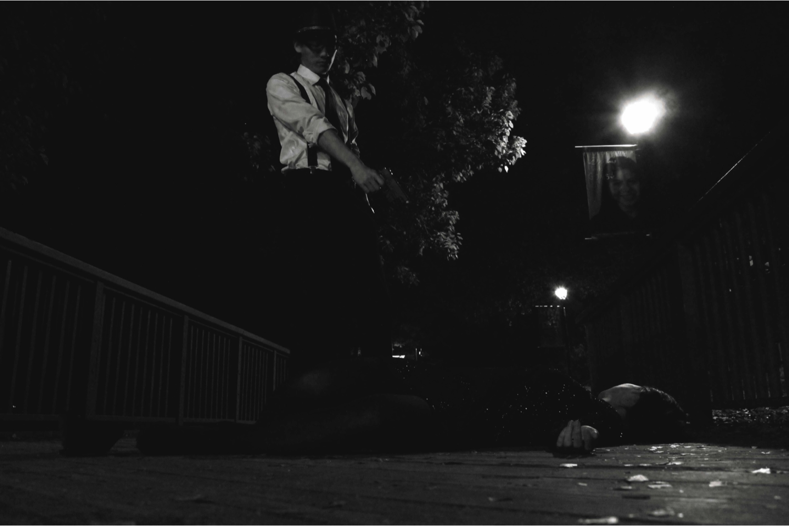
- The lighting in this shot comes from a single lamp post, under which is a picture of a smiling, knowing face- the face of God (or a higher power).
- The three faces are set up in a triangle. The perpetrator, the victim, and the Judge.
- The railings of the bridge already seem to bar Joe in. The bars reflect the punishment of the crime he just committed. However, the bars are still low, and Joe can still escape.
3) Title Scene: Joe attempts to flee the city by train. He enters the railroad station.
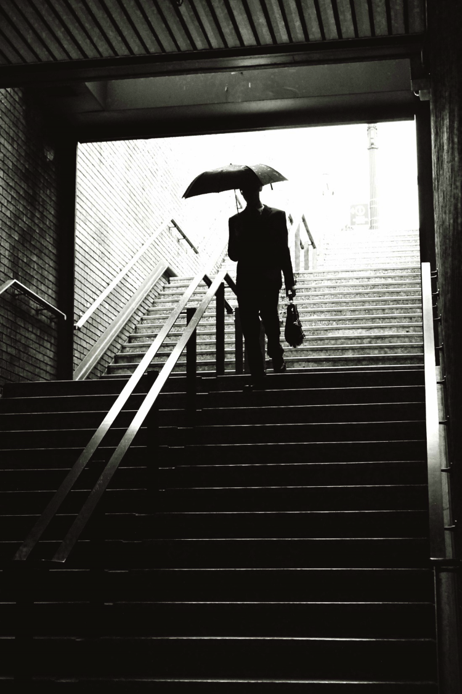
- His face is hidden in darkness, which causes his character to be unknown. Compare to Kitty, his face is usually hidden, which emphasizes on this fact that he is less considerable and important (in general) rather than femme fatale. He will be situated into compromising, dangerous, and deadly situation.
- The harsh contrast between dark and light makes the shot very noirish and mysterious.
- Using stairways as claustrophobic framing
- The main character, Joe is in absolute darkness, then patches of light added to the shot (background)
- He is also comes from light (upstairs) to darkness (downstairs), therefore, he walks into the danger.
- The low angle shot; the horizontal lines of the stairs are in contrast with the vertical lies of the roofà these bizarrely compositions creates the frightful condition for the protagonist.
4) Joe attempts to flee the city by train. He enters the railroad station.
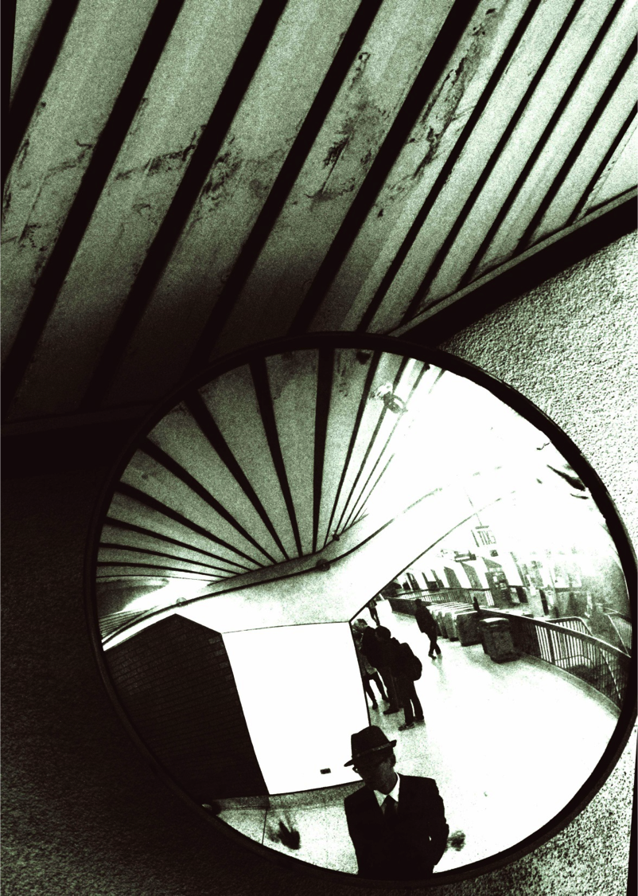
- The protagonist, Joe, poses for the camera in front of the mirror. By using a 'mirror,' the character confronts his real self. Joe is in the middle of the frame, and therefore all the attentions are towards him.
- There are bars on the roof, which reflect in the mirror as well. The bars all around Joe could be the metaphor that he is imprisoned. Or may be he is trapped right inside the mirror.
- Outside the frame (the mirror) is darker rather than inside, and this contrast in lighting makes the environment of this shot very mysterious.
- The angle of the shot is high angle, which demonstrates that Joe is anxious. Using bizarrely angled shots creates a world that is never safe or stable.
5) Joe arrives in the city of Berkeley. He is still hung up on thinking about the Woman he killed. He can't get her face out of his head. "You do something wrong... once..."
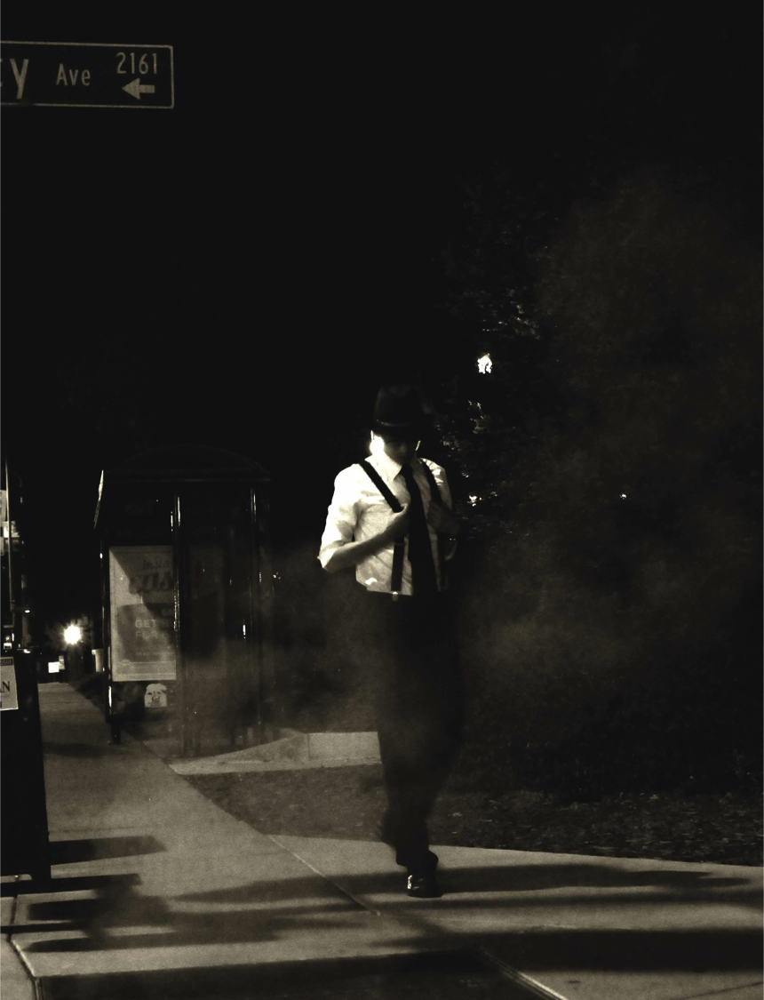
- The shot is taken mid distance from Joe.
- Although there are no other figures in the shot, the multiple shadows on the ground hints that he might not be completely alone.
- The steam and mist create a ghostly atmosphere- he is haunted by the past and by the girl he killed.
6) Joes sees Kitty for the first time. He is instantly intrigued by this mysterious character.
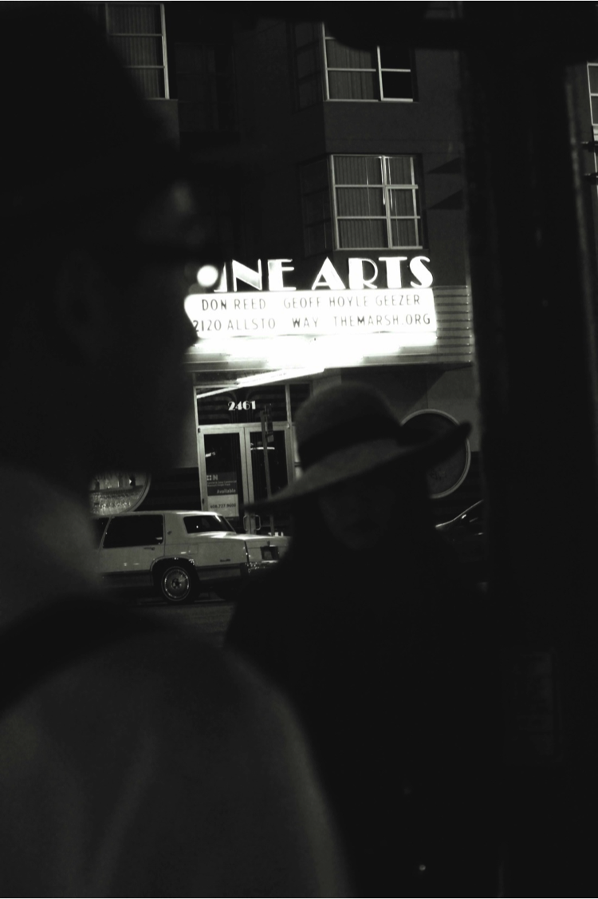
- Both characters are blurry, creating a sense of mystery behind both characters. The audience is unable to make out the features of Kitty and only sees the bottom half of her face.
- The shot is taken from behind Joe. This forces the audience to take Joe's point of view and align themselves with Joe.
- The letters "NEARTS" is the only thing in focus. The font of the "N" can be mistaken for an "H", spelling "HEARTS". This foreshadows the future relationship between Joe and Kitty.
7) Kitty invites Joe into her apartment. They talk over cigarettes.
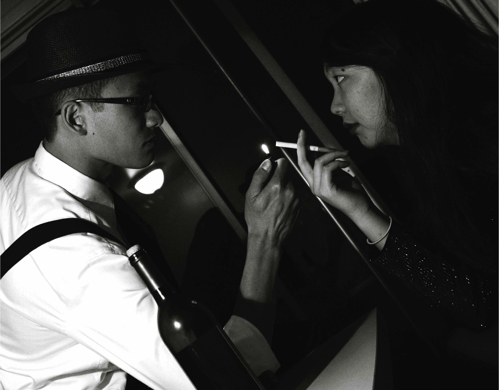
- The frame is angled in such a way that, although Joe should be leaning over Kitty, they are actually position on an even, horizontal level. This symbolizes that at this point, neither Kitty nor Joe have power over the other.
- The Dutch angle also disorients the audience and signals that something is wrong.
- The left side of the frame is illuminated by the reflection of the light as well as the whiteness of Joe's shirt; Joe is also holding the match. Kitty on the other hand is primarily on the dark, right side of the screen.
8) Kitty seems upset but won't tell Joe why. Kitty looks out the window as the headlights of a car flashes by. She ponders how she can get out of the jam she is in. Earlier that day, mobsters showed up at her door, accusing her of stealing reels of film from her workplace at Paramount Studios. They demand reimbursement for damages.
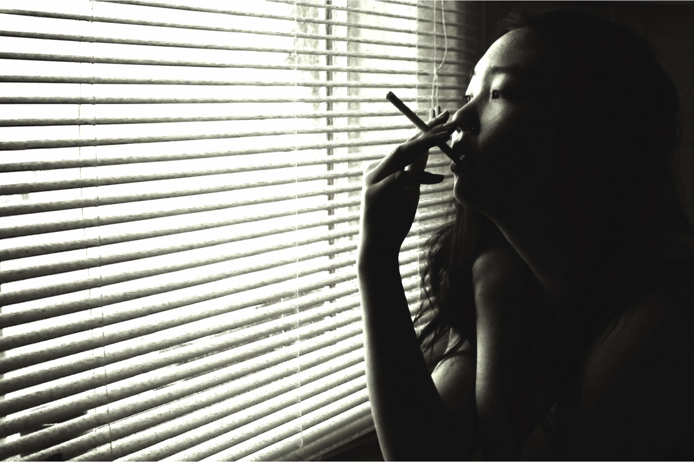
- Her cigarette is a trait, which makes her a femme fetale; therefore she begins to smoke more and more. She also holds the cigarette with charm.
- She is, then, the symbol of power in the film, and determines Joe's fate.
- The noir elements of the shot: window bars, low-key lighting, and mysterious and two-face character.
- Half of her face is dark, while the other half is light, which represents her seductive character. The light part of the face depicts her good character, while the dark part connotes her mysterious character.
9) Kitty seduces the drunk Joe and gets him to agree to help her rob the bank vault.
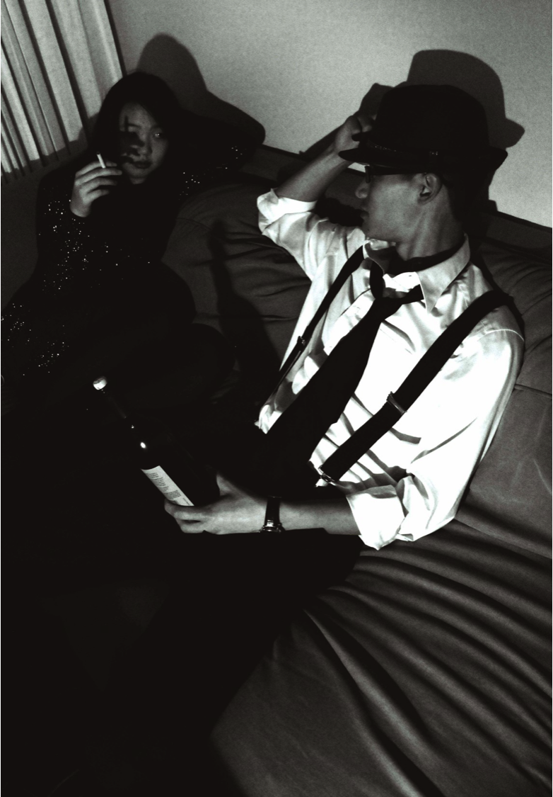
- Kitty's hand casts a shadow across half her already darkened face. This reflects Kitty's deceptive and nefarious plot to use Joe for her own gain..
- Although she is physically smaller than Joe, her shadow on the wall also elongates her presence on the screen to equal that of Joe's.
- The shadow of the bottle becomes a phallic symbol pointing towards Kitty. Kitty's cigarette can also be interpreted as an erect, albeit smaller, phallus.
10) Kitty and Joe kiss.
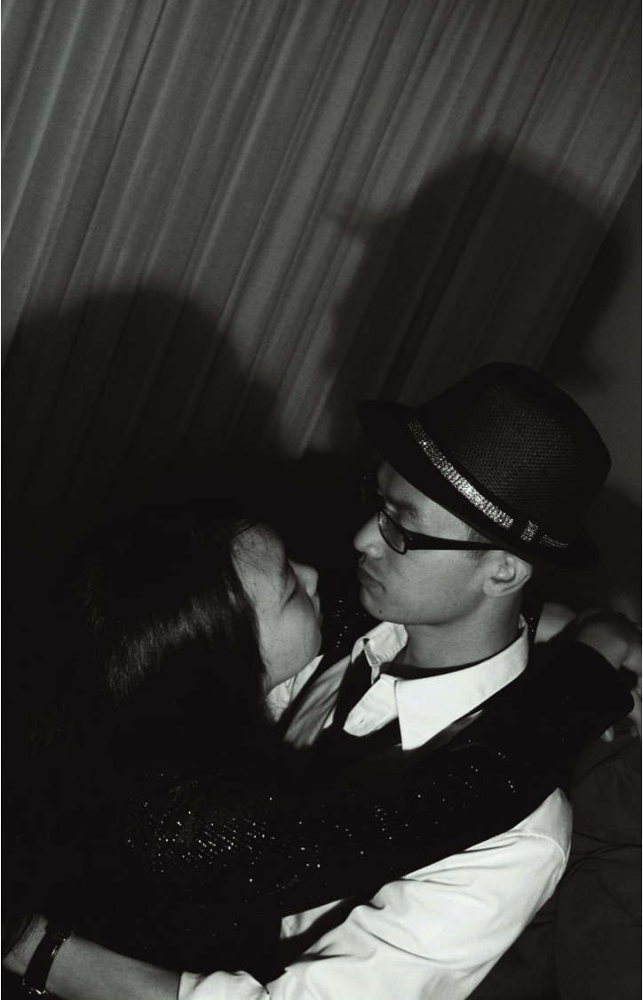
11.) Joe is in front of the bank trying to commit the robbery; a heist.
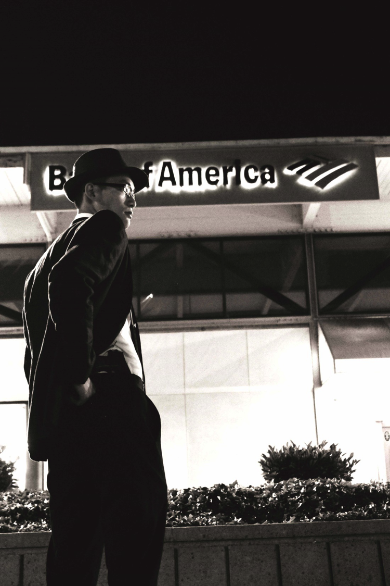
- This is a low angle shot, and this unusually angled shot creates anxiety and unsafe world. The whole shot is very frightful and the composition of everything in this very shot alerts us something dangerous would happen soon.
Joe, on the other hand, is trying to pull out his gun, and the low angle shot enables us to be more focused on his acts.
- Actors and setting are often given equal emphasis in film noir; to better saying objects speaks, and in this very case, the emphasis is on Joe, and at the same time is on the bank (the word 'America' is at the center of attention).
- Joe becomes a law-abiding citizen lured into a life of crime. [The femme fatale (Kitty) convinces him to do the robbery.]
- Again, there is contrast in lighting the background is black and dark, while the center is light.
- Robbery/corruption/betrayal (maybe) / paranoia and fear are other elements of the shot that are obvious.
12) Joe delivers the money to Kitty. He wants to marry her, but Kitty reveals that she was just using him. Joe threatens to call the police.
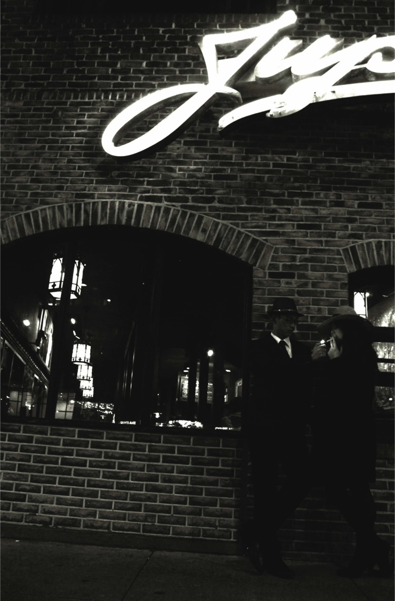
- Kitty's face is hidden in the shadows of her hat when they reunite after the heist. Kitty's face remains mostly hidden in their conversation as she remains distanced. When Joe lights Kitty's cigarette, her face is partially revealed. Seeing that she isn't happy as Joe expects, he knows something is wrong. As she reveals her plans, he becomes angry.
- Though Joe and Kitty are shot on seemingly level ground, the unevenness of the streets gives off the perception that the camera is shooting a cant shot, foreshadowing the madness to come. However, despite such foreshadowing, their proximity is not separated by a window, but bounded by two windows, and unified by a light. Their bodies are relaxed as their faces remain tense -- subconsciously they're comfortable with one another, but Kitty's plans allows the tenseness to arrive.
13) Joe decides to flee the city once again.
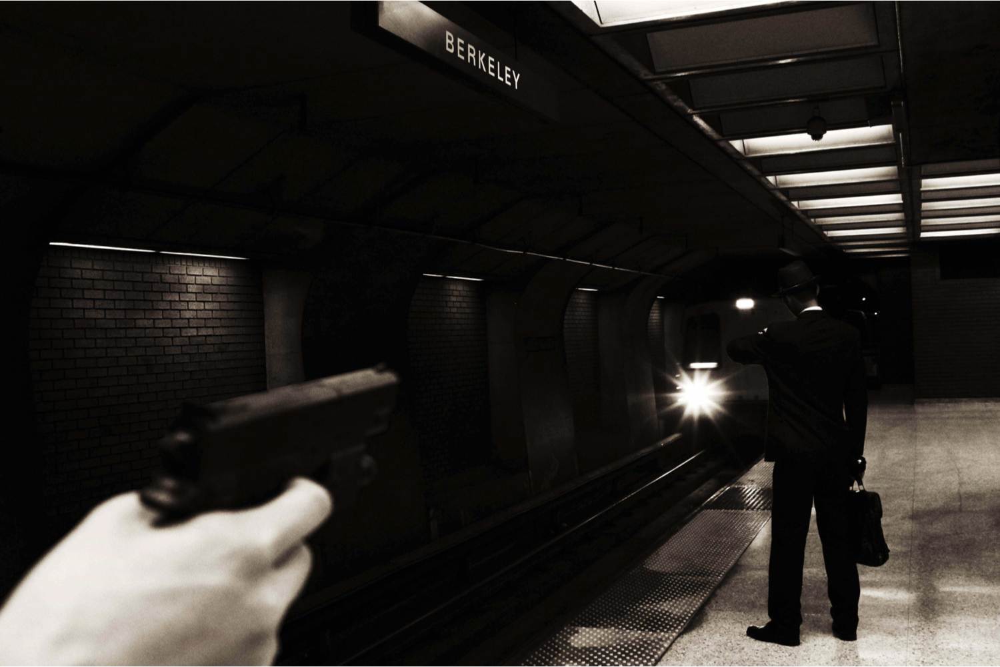
- Feeling betrayed, Joe decides to runs to the BART quickly with the money in his briefcase. Kitty's anger and shock that Joe would choose to abandon her so quickly leaves her quick to react. With the very gun used in the heist to steal the money, she shoots Joe seconds before the BART arrives.
- Angled in a POV shot, we see the distance between Joe and Kitty. He stands with his back to her, as the gun points at him, once again reminding us of the betrayal he faces from one he "loves". At the same time, he stands close to the edge, almost timing his the arrival of the BART. It's unknown as to whether Kitty shoots him, if he jumps in front of the train, or if he leaves unscathed.
End Shot
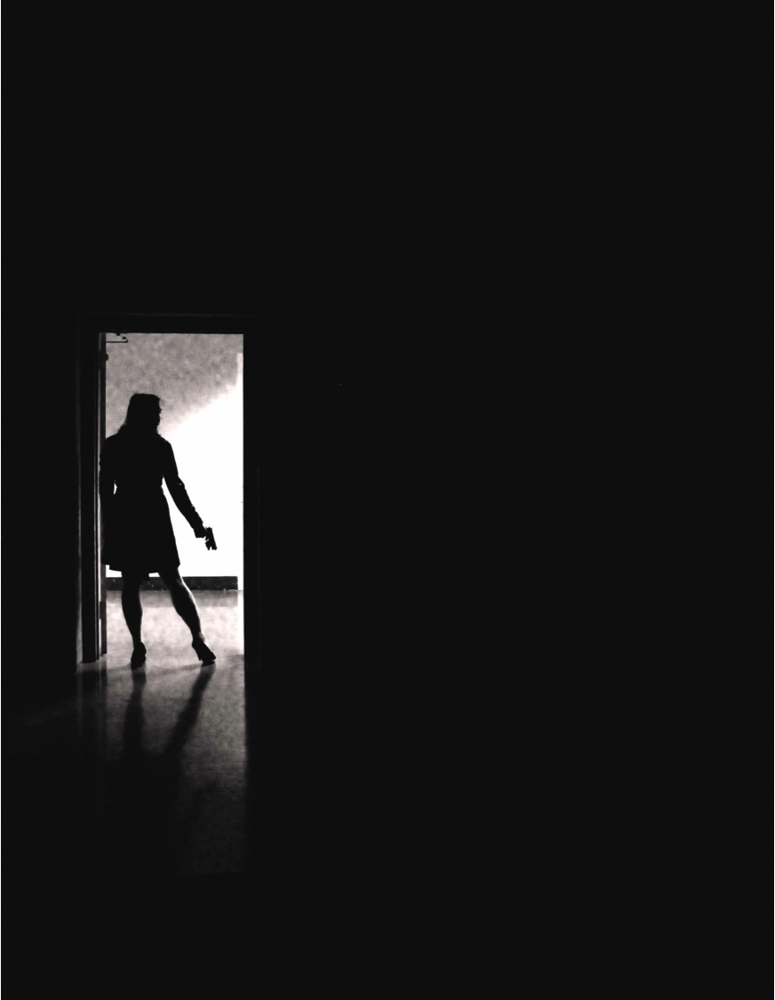
- Kitty stands alone in a dark doorway, back towards us, with light flooding in. She stands in a power stance, both eliciting her power, yet she is a small figure in the overwhelming darkness of the shot.
- There are two perspectives we can interpret this photo. Whether she is taking a step towards the light, to become a better person or whether she skirts the darkness and the light, flickering back and forth.